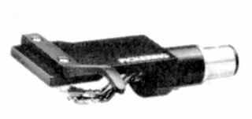
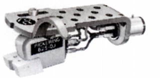
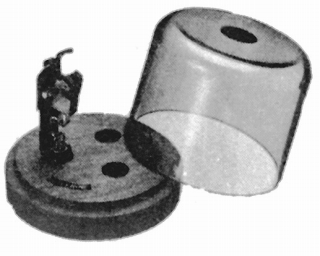
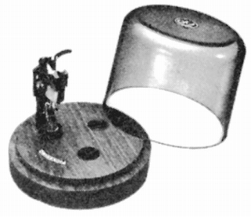
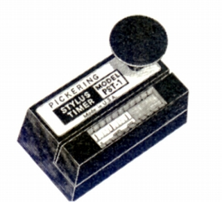
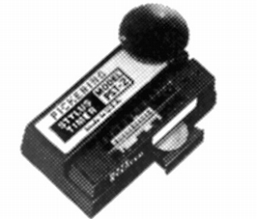
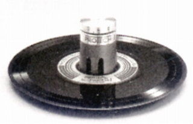

その他の製品
PS-1

■価格 3,800円
■重量 9.5g
■備考 硬質アルミ削り出し。
2ピンロック式。
なおAS-2PSという名称のシェルもある。
価格等は不明だが、1980年代末にはすでに販売されていた。
やはり2ピンロック式。

PCS-1

■価格 2,500円
■備考 カートリッジキーパー。
3個のカートリッジをシェル付きで収納。
材質がチーク材のスタンダートモデル。
PCS-2

■価格 4,400円
■備考 カートリッジキーパー。
3個のカートリッジをシェル付きで収納。
材質がコンプレッグウッド材のデラックスモデル。
PST-1

■価格 6,500円
■備考 スタイラスタイマー。
詳細不明。
1975年頃のモデル。
PST-2

■備考 スタイラスタイマー。
0から1000時間まで演奏時間をカウント。
水銀電池使用となっている。
1970年台末のモデル。
なおピカリングの代理店「東志」は上記のような
演奏時間カウント式のスタイラスタイマー以外に
テストレコードで接触抵抗を測定する方式の
スタイラスタイマーも扱った。
「プロテック」のProtech1 9,500円
